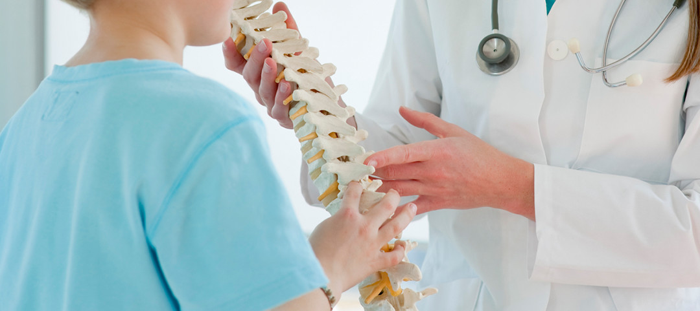
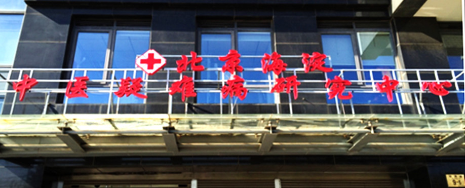

医院简介

医院简介
医院环境
荣誉资质
北京海淀中医疑难病研究中心创建于1964年5月，位于中国高校最密集的成府路（近期迁址于学清路），是一所专科中医疑难病研究治疗中心，并设有科研、教学部门对疑难病进行深入研究。多次被国家中医药管理局评为"全国中医示范临床基地”。是北京中医药大学和首都医科大学中医药学院的临床教学点。在医疗上系统使用传统中医治疗方法。北京海淀中医疑难病研究中心是改革开放后国家中医管理局重点扶持的传统医学临床医疗机构，有着40年的历史。1979年医院重新扩建，中心在职职工86人，卫生技术人员49人，其中正、副主任医师26人，有博士、硕士9名，多年来专家组经反复临床研究得出，以中医独特的壮元、益气、补肾、综合通统疗法彻底治愈青少年抑郁症，强迫症，脊柱侧弯等重大疑难疾病，使上万名患者得以康复。  北京海淀中医疑难病研究中心在医疗临床实践中坚持发挥中医、中药的优势，传承和发扬祖国传统中医药治疗体系，发展方向源于中国传统文化的中医理论，以其博大精深著称。中医药文化博大精深，从神农尝百草，伏羲制九针开始，逐渐形成了包括中医药经络文化、诊疗文化、本草文化、养生文化等在内的完整的中医药理论体系。根据中心著名老中医长期临床经验的验方和秘方及科研成果，在专科专病建设上，脊柱侧弯的传统中医药综合疗法，已获得卫生部，中医药管理局等国家机构的认可，并被国家中医药管理局确定为“国家重点中医专科”治疗单位。北京海淀中医疑难病研究中心于2008年10月被卫生部颁发“全国十佳疑难病医院”并获奖牌。2009年被北京市中医药管理局评为“全国中医范临床基地”“科技进步一等奖”；2007年北京海淀中医疑难病研究中心被北京市物价局评为“北京市医疗诚信单位”。
中心突出中医特色和发挥中医优势。在医疗管理上注重继承和弘扬中医药文化，成立了名老中医继承研究室，研究、探讨中医治疗各种疾病的机理。先后完成了部、市、区级科研课题29项。其中2项是国家“七五”期间科研攻关课题、3项是北京市中医管理局招标课题、2项北京市科委课题、1项获得北京市中医管理局科技进步一等奖、1项获北京市科技进步二等奖、2项获北京市科技进步三等奖。
中心作为北京中医药大学和首都医科大学中医药学院的临床教学点，承担着这两所高校本科生及外国留学生的临床授课及临床实习工作。1997年成为国家中医药管理局公布确认的41家对外开办中医进修教育机构之一，同时也是北京市批准的可以独立开办对外教育的中医进修教育机构,承担着外国中医教育机构的进修实习任务，每年培训外国留学生、进修生数百人。 作为北京市对外重点参观单位和开放窗口，每年接待数千人次的世界各国外宾参观交流。
我中心被北京市政府评为首都文明先进单位；计量达标中药房。医院在管理上注重内涵建设，倡导“以人为本、以病人为中心”的服务理念；医疗质量至上的工作态度。努力为患者提供温馨、舒适的就医环境。我们以“精诚、勤奋、团结、奉献”的办院精神，努力打造一所传统中医特色突出、综合功能齐备、临床疗效显著、令患者满意的中医疑难病研究中心
触屏版
|
电脑版
地址:北京市海淀区学清路9号
联系电话:010-62533017 | E-mail:zhongyijzcw@yahoo.cn
北京中医疑难病脊柱侧弯治疗中心©2010版权所有